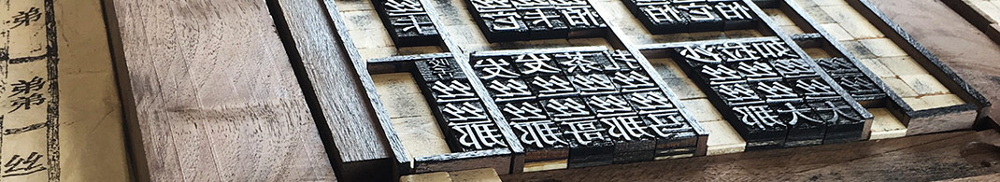

Ideation
The process of conceptualizing, developing, and sharing new ideas is an essential part of the design process. In the case of Pinying, the inventor was inspired to recreate and
update ancient technologies and methods developed over 1,000 years ago in China. The exhibit recreates Stalling’s ideation process by staging the invention as it would have existed 1,000 years ago, 100
years ago, and as it exists today.
Fabrication
The next section of the exhibit focuses on the material process of invention at OU, revealing the inventor’s efforts at the initial disclosure of the invention, through its
patenting process, and on to rapid prototyping and testing in OU’s Innovation Hub and Edge creative labs.
Commercialization
Finally, the exhibit explores how OU student interns in the ICCEW worked with Professor Stalling to create and test hypotheses for the needs of the target
market, ultimately launching the Pinying app in the Apple App Store, as well as founding a new company under the leadership of OU, the Forest Path Studio.